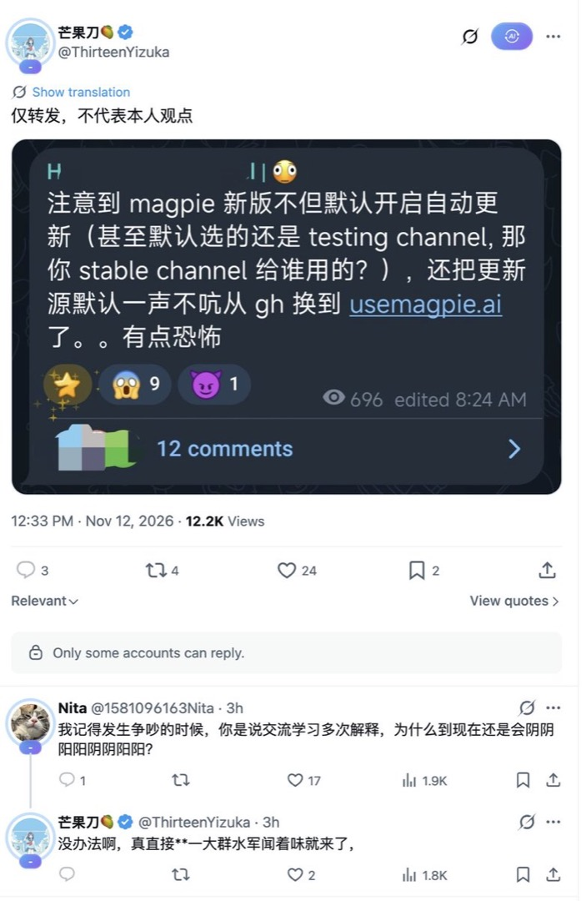
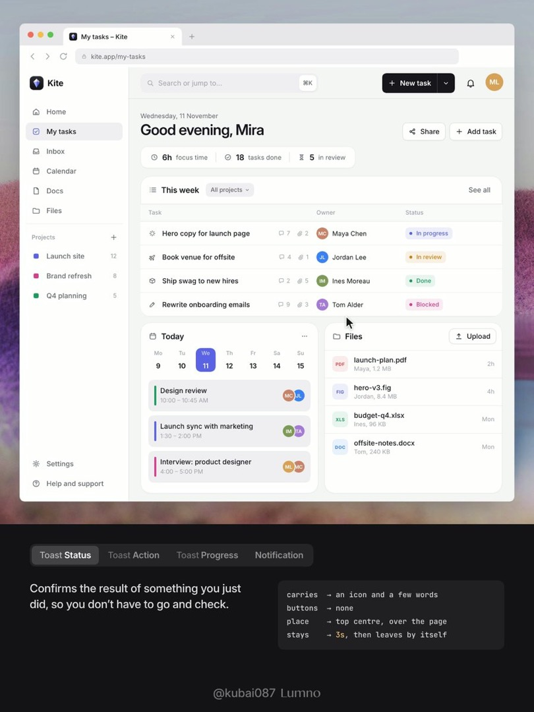
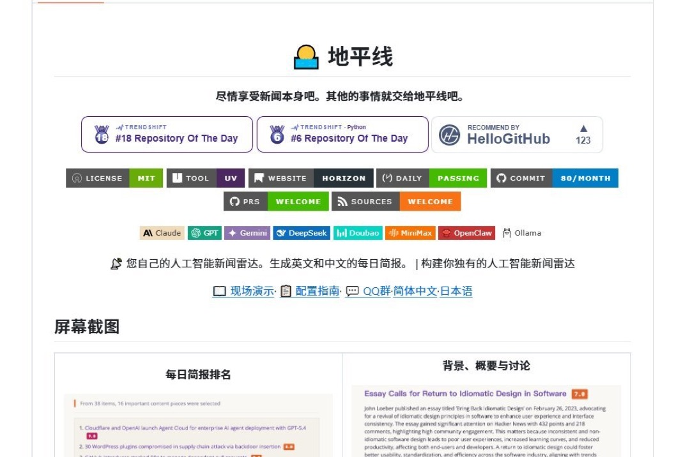
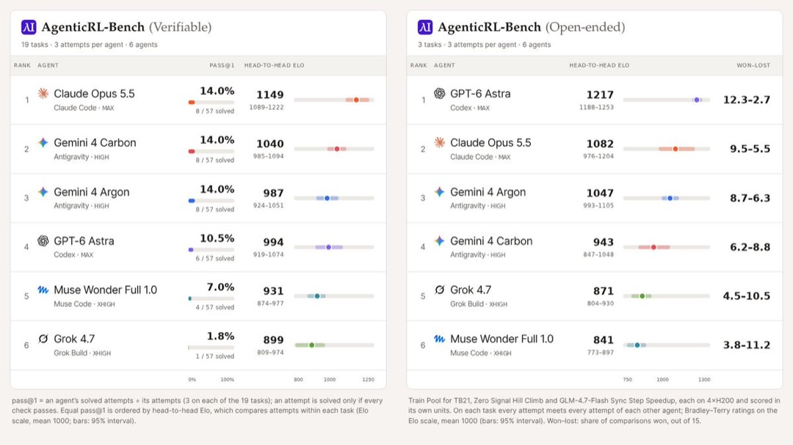

本期速览
01 Magpie 更新源迁至官方域名
03 Horizon 聚合多源新闻生成日报
04 Pi 扩展生态新增子Agent与插件
05 Eigent 发布Agent做RL基准
01｜Magpie 更新源迁至官方域名
来源（X） · @magpie_router · 2026-11-12 15:35

02｜Toast 与通知组件的场景分工
来源（X） · @Kubai087 · 2026-11-12 09:00
在网页端，尤其是给操作反馈时，我们常用 Toast 或 Notification 传递信息。两者的使用场景有什么区别？
Toast 用于即时、直接的反馈：展示某个操作的结果，用户知道即可。
它可以附带一个按钮（比如撤销），配合倒计时，到时自动消失，避免打扰。耗时的操作，也可以先显示进度，完成后原地变为结果。
如果某件事必须由用户处理，就不适合用 Toast：不可撤销的操作，应在执行前用弹窗确认；需要处理的失败，应留在原处，直到解决。
Notification 常见于操作系统，一些工作台类产品也会使用。它与 Toast 最大的区别在于：内容可以与用户当前的操作无关，由他人或系统主动发出，而不是由用户的操作触发。
因此，它适合展示需要用户看到、但不必立刻打断的信息，这也是它与弹窗的区别。
Notification 会一直保留，直到用户处理或关闭；多条可以堆叠，也可以附带操作按钮。
附一条 Prompt（比较长，如果你需要）：它会先读取你的产品，逐条判断每条提示该用 Toast、Notification 还是都不用，列出表格由你决定；确认后，还可以按视频中的效果改造 Toast 和 Notification ⬇️
001–016 期都在主页 Highlights，栏目日更中
正在冲刺万粉（10k），期待你的推荐！🫶 非常感谢

03｜Horizon 聚合多源新闻生成日报
来源（X） · @HeLi8866 · 2026-11-12 16:48
项目名叫 Horizon ，它会替你把各路消息先过一遍，只把真正有用的消息推给你。
1、Telegram、X、GitHub、RSS、Reddit、Hacker News，这些渠道都能一次接进来。
2、它自己会筛一遍、打个分，重复的消息合并成一条，剩下的才是值得看的。
3、每天自动给你出一份中文、一份英文的日报，还会顺手补上事情的来龙去脉和大家的讨论。
地址在这：https://github.com/Thysrael/Horizon

04｜Pi 扩展生态新增子Agent与插件
来源（X） · @GitTrend0x · 2026-11-12 15:00
tintinweb 的子 Agent 军团、code-yeongyu 的嵌套规则注入、ben-vargas 的扩展百宝箱、opensec 的原生编译闪电版、jmfederico 的网页指挥台……全网玩家把 Pi 玩成了下一代「多 Agent 指挥部 + 目录规则管家 + 插件军火库 + 秒开引擎 + 远程驾驶舱」:
1️⃣ tintinweb/pi-subagents（https://github.com/tintinweb/pi-subagents）
给 Pi 带来 Claude Code 式的子 Agent 和工作流编排：每个子 Agent 独立会话、自带工具和模型，可后台跑、中途改方向、续跑，还能用 JS 脚本写确定性流程；1,433 星。
“一个 Pi，秒变一支施工队”！
2️⃣ code-yeongyu/pi-nested-agents-md（https://github.com/code-yeongyu/pi-nested-agents-md）
Agent 读到子目录里的文件时，自动把附近各层的 AGENTS 规则文件附进上下文，补上 Pi 只加载根目录规则的空缺；移植自 oh-my-openagent。
“走到哪个目录，就守哪个目录的规矩”！
3️⃣ ben-vargas/pi-packages（https://github.com/ben-vargas/pi-packages）
作者自用后开源的一组 Pi 包：扩展、技能、提示词模板和主题，包括 Synthetic 模型接入（Kimi、GLM、MiniMax、Qwen 等）、Antigravity 生图等。
“别人的私房工具箱，直接拎包入住”！
4️⃣ opensec-git/Pi-Bolt（https://github.com/opensec-git/Pi-Bolt）
把 Pi 提前编译成一个原生可执行文件，不要 Node 也不要 Bun：README 实测 41 ms 就能开始输入（Node 版 423 ms），写 400 KB 文件快 120 倍；803 星。
“同一个 Pi，换上了火箭发动机”！
5️⃣ jmfederico/pi-web（https://github.com/jmfederico/pi-web）
Pi 的网页界面：会话跑在你自己的机器或服务器的真实工作区里，断开连接也不停，电脑和手机浏览器都能同时盯多个会话；935 星。
“人在地铁上，Agent 在机房里干活”！
05｜Eigent 发布Agent做RL基准
来源（X） · @Xudong07452910 · 2026-11-12 11:48
Eigent AI 新发布的 AgenticRL-Bench，探讨 Agent 能否逐步接手 RL 研究人员的工作，甚至参与训练下一代 Agent？
他们直接拿真实 RL 研发中遇到的问题来测试。目前 Agent 已经能自己调整训练策略、跑出实际收益，不过很多时候连自己的工作是否真正完成还是判断不准。
但是未来真的走向 AI 的 Recursive Self-Improvement，验证能力会变得非常重要。
顺便说个小插曲，当时 Guohao 老师团队还在伦敦的时候，我还私信老师问团队招不招线下实习🙃，一晃眼两年过去了。
引用内容
Guohao Li 🐫 @guohao_li
中文译文
智能体能执行 agentic RL 吗？如果 RSI 发生，智能体将需要接手研究人员在 agentic RL 方面的工作
隆重推出 AgenticRL-Bench：这是 The Environment Lab @env_lab_ai 在 Eigent AI 的努力所产出的第一项发布
22 个任务从生产级 agentic RL 系统的真实世界 RL 事故中重建，包括 Miles、Slime、Verl、SGLang 和 Harbor，涵盖技术栈的 8 个领域：训练数据、harness、算法、RL 基础设施、配方、评估、监控和能力迁移
我们运行了 6 个智能体，每个任务尝试 3 次。在 19 个可验证任务上，没有智能体通过超过其尝试的 14.0%
在三个开放式任务中，智能体使用 4×H200 GPU 在 10–16 小时内改进了真实策略或训练步骤。在其中一个任务 Zero Signal Hill Climb 上，基座模型无法解决 38 个任务中的任何一个，最好的一次尝试开发了自己的方法：智能体首先使用带提示的文本反馈生成成功的 rollout，然后从轨迹中移除这些反馈，并将这些成功的 rollout 与常规 GRPO rollout 混合以形成混合训练组。它监控训练过程并调整 KL loss 权重以防止训练崩溃。这将 pass@1 从 0 提升到 0.186（38 个任务中的 12 个）
原文
Can agents perform agentic RL? If RSI happens, agents will need to take over researchers' work on agentic RL
Introducing AgenticRL-Bench: the first release from The Environment Lab @env_lab_ai effort at Eigent AI
22 tasks rebuilt from real-world RL incidents on production-grade agentic RL systems, including Miles, Slime, Verl, SGLang, and Harbor, spanning 8 areas of the stack: training data, harnesses, algorithms, RL infrastructure, recipes, evaluation, monitoring, and capability transfer
We ran 6 agents with 3 attempts per task. On the 19 verifiable tasks, no agent passes more than 14.0% of its attempts
Across the three open-ended tasks, agents improved real policies or training steps using 4×H200 GPUs over 10–16 hours. On one of these tasks, Zero Signal Hill Climb, where the base model fails to solve any of the 38 tasks, the best attempt developed its own method: the agent first used hinted text feedback to generate successful rollouts, then removed the feedback from the trajectories and blended these successful rollouts with regular GRPO rollouts to form mixed training groups. It monitored the training process and adjusted KL loss weight to prevent training collapse. This improved pass@1 from 0 to 0.186 (12 out of 38 tasks)
